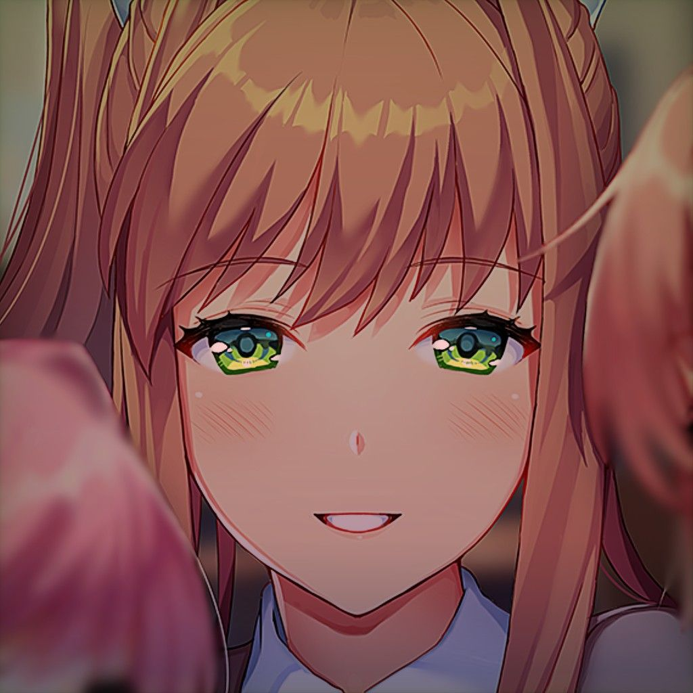

Dylan Hurtado
It's not easy having yourself a good time Greasing up those bets and betters Watching out they don't four-letter Fuck and kiss you both at the same time Smells like something I've forgotten Curled up died and now it's rotten.
I'm not a gangster tonight Don't wanna be a bad guy I'm just a loner baby And now you've gotten in my way. I can't decide Whether you should live or die Oh, you'll probably go to heaven Please don't hang your head and cry No wonder why My heart feels dead inside It's cold and hard and petrified Lock the doors and close the blinds We're going for a ride It's a bitch convincing people to like you If I stop now call me a quitter. If lies were cats you'd be a litter Pleasing everyone isn't like you Dancing jigs until I'm crippled. Slug ten drinks I won't get pickled